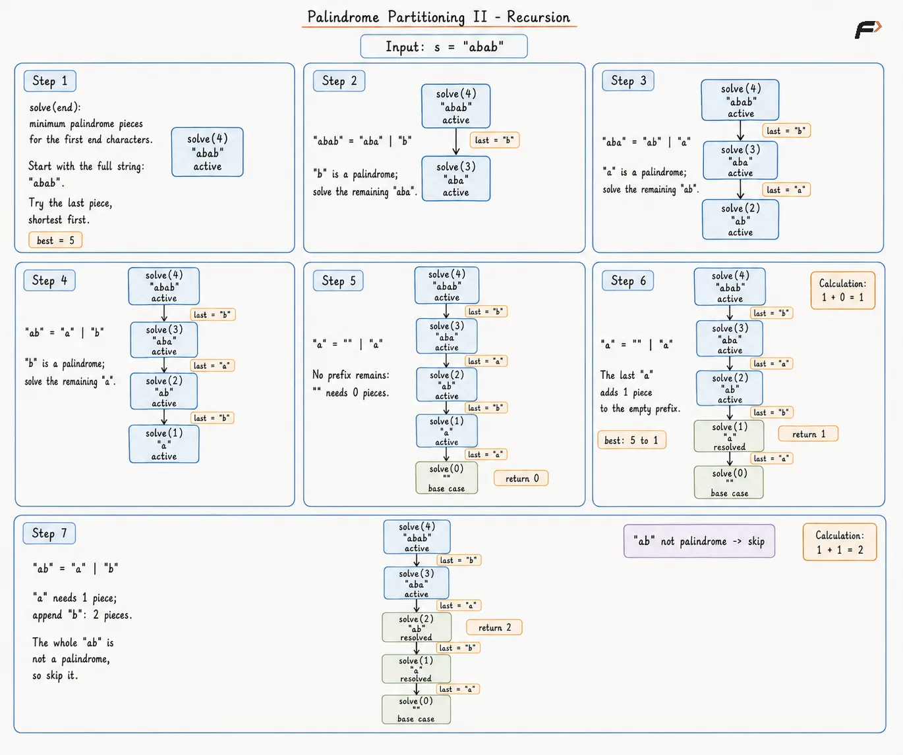
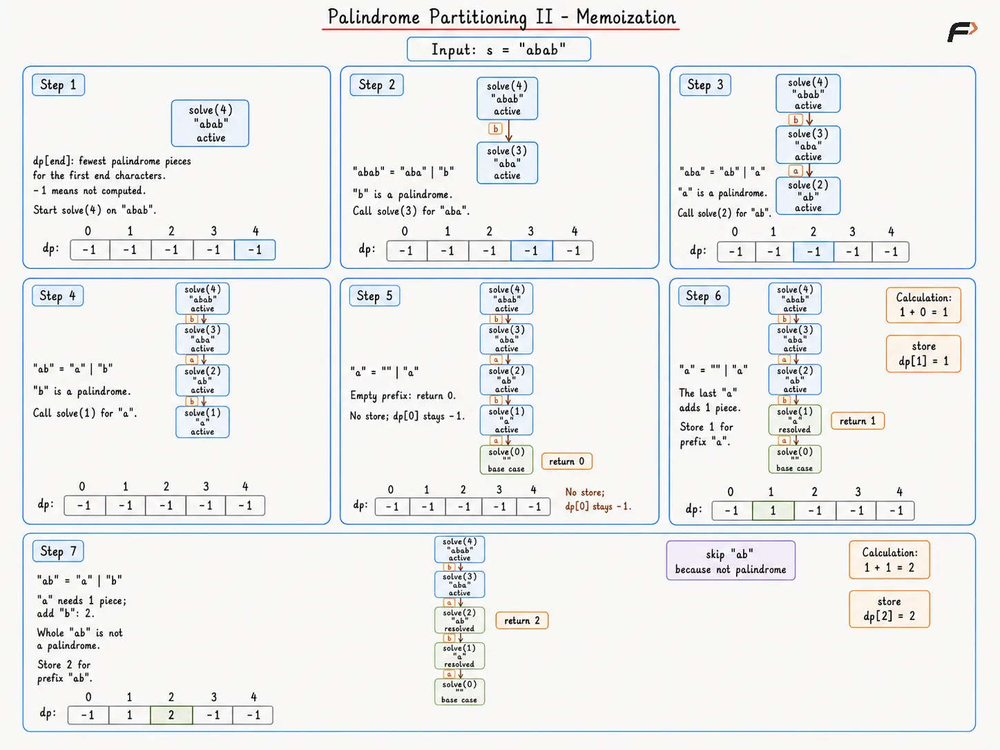
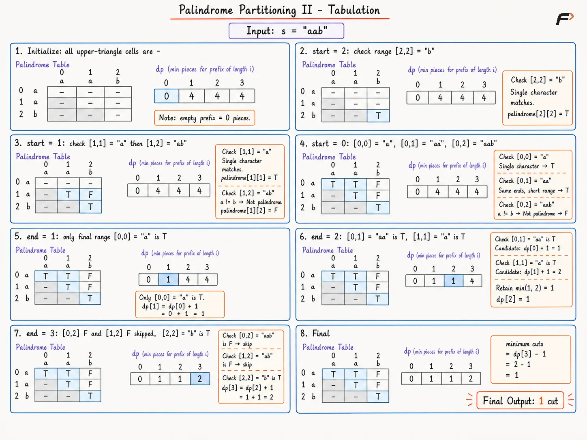
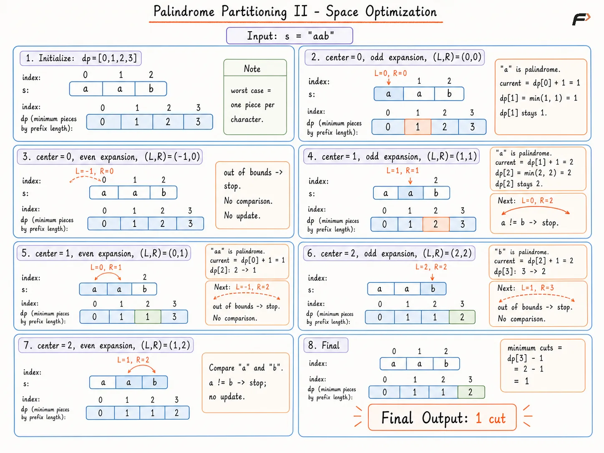

Palindrome Partitioning II: Minimum Cuts
Given a string s, place cuts between adjacent characters so every resulting substring is a palindrome. Return the smallest possible number of cuts.
A palindrome reads identically from left to right and from right to left. Every part must be a non-empty contiguous substring, and the parts must cover the complete string in the original order.
Example 1
Input: s = "aab"
Output: 1
Explanation: The partition "aa" | "b" contains only palindromes and needs one cut.
Example 2
Input: s = "a"
Output: 0
Explanation: A single character is already a palindrome, so no cut is needed.
Recursion
A cut is made only between two neighboring characters. Instead of directly minimizing cuts, we first minimize the number of palindromic pieces, because a partition with p pieces always needs exactly p - 1 cuts.
The state solve(end) represents the minimum number of palindromic pieces needed to form the prefix s[0...end-1]. For each state, we try every possible starting position of the last piece. If s[start...end-1] is a palindrome, it becomes one valid piece, and we recursively solve the remaining prefix ending at start. The public method starts with solve(n) because the complete string contains all n characters.
Algorithm
Handle an empty string before recursion because it needs
0cuts.Begin with
solve(n)because the initial state represents the complete string.Return
0fromsolve(0)because an empty prefix requires no palindromic pieces.Initialize the best piece count to a value greater than
nso any valid partition can improve it.Move
startfromend - 1down to0to consider every possible final substring.Check whether
s[start...end-1]is a palindrome because only palindromic substrings can form valid pieces.For every palindromic substring, add
1for that piece to the minimum pieces needed for the remaining prefixs[0...start-1].Return the smallest piece count found and subtract
1in the public method becauseppieces require exactlyp - 1cuts.
Dry Run

Diagram 1
Solution
#include <bits/stdc++.h>
using namespace std;
class Solution {
private:
// Checks whether one range is palindromic.
bool isPalindrome(string& s, int left, int right) {
// Compares matching positions from both ends.
while (left < right) {
// A mismatch makes the range invalid.
if (s[left] != s[right]) {
return false;
}
// Moves both pointers toward the center.
left++;
right--;
}
return true;
}
// Finds minimum pieces for one prefix.
int solve(string& s, int end) {
// An empty prefix needs no piece.
if (end == 0) {
return 0;
}
// The sentinel exceeds every possible piece count.
int best = s.size() + 1;
// Tries every possible final piece.
for (int start = end - 1; start >= 0; start--) {
// Only a palindrome can form a valid piece.
if (isPalindrome(s, start, end - 1)) {
// The final palindrome adds one piece.
int current = 1 + solve(s, start);
// The smallest valid partition is retained.
best = min(best, current);
}
}
return best;
}
public:
// Returns minimum cuts for the full string.
int minCut(string s) {
// Empty input needs no cut.
if (s.size() == 0) {
return 0;
}
// The full prefix contains every character.
int pieces = solve(s, s.size());
// One fewer cut than pieces joins the partition.
return pieces - 1;
}
};
// Driver code
int main() {
string s = "aab";
Solution obj;
cout << obj.minCut(s) << endl;
return 0;
}Note: Direct recursion may fail for large input values. Repeated subproblems create exponential work, so an online judge may report Time Limit Exceeded.
Complexity Analysis
Time Complexity: O(2N), where N is the length of the string, because the recursion explores exponentially many possible cut patterns in the worst case, with palindrome checks adding work within those recursive calls.
Space Complexity: O(N), because the deepest recursive path can contain up to N active calls, while palindrome checking uses only constant extra space.
Memoization
Recursion can reach the same prefix through different choices of the final palindromic piece. Without memoization, the entire search for an already solved prefix is repeated. Storing the answer for each prefix avoids this repeated work.
A one-dimensional dp array is used, where dp[end] stores the minimum number of palindromic pieces needed for s[0...end-1]. The recursive choices remain the same; the only difference is that a previously solved state is returned immediately instead of exploring its subtree again.
Algorithm
Handle an empty string before allocation because it needs no prefix states or cuts.
Fill the
dparray with-1so every unsolved prefix can be distinguished from a valid piece count.Start with
solve(n)because the state atnrepresents the complete string.Return
0whenend = 0because an empty prefix requires no palindromic pieces.Return
dp[end]immediately when it is already calculated because the same prefix does not need to be solved again.Try every possible
startfor the final substring because an optimal partition may end with any palindromic suffix.For each palindromic final substring, calculate
solve(start) + 1because the chosen substring forms one additional piece.Keep the minimum candidate for
dp[end]because we want the fewest palindromic pieces.Store the result in
dp[end]so future calls can reuse it.Return
solve(n) - 1because a partition withppieces requires exactlyp - 1cuts.
Dry Run

Diagram 1
Solution
#include <bits/stdc++.h>
using namespace std;
class Solution {
private:
// Checks whether one range is palindromic.
bool isPalindrome(string& s, int left, int right) {
// Compares matching positions from both ends.
while (left < right) {
// A mismatch makes the range invalid.
if (s[left] != s[right]) {
return false;
}
// Moves both pointers toward the center.
left++;
right--;
}
return true;
}
// Finds and stores minimum prefix pieces.
int solve(string& s, int end, vector<int>& dp) {
// An empty prefix needs no piece.
if (end == 0) {
return 0;
}
// A stored answer avoids repeated recursion.
if (dp[end] != -1) {
return dp[end];
}
// The sentinel exceeds every possible piece count.
int best = s.size() + 1;
// Tries every possible final piece.
for (int start = end - 1; start >= 0; start--) {
// Only a palindrome can form a valid piece.
if (isPalindrome(s, start, end - 1)) {
// The final palindrome adds one piece.
int current = 1 + solve(s, start, dp);
// The smallest valid partition is retained.
best = min(best, current);
}
}
// The prefix answer is cached for later calls.
dp[end] = best;
return dp[end];
}
public:
// Returns minimum cuts for the full string.
int minCut(string s) {
// Empty input needs no cut.
if (s.size() == 0) {
return 0;
}
// Negative values mark uncalculated prefixes.
vector<int> dp(s.size() + 1, -1);
// The full prefix contains every character.
int pieces = solve(s, s.size(), dp);
// One fewer cut than pieces joins the partition.
return pieces - 1;
}
};
// Driver code
int main() {
string s = "abab";
Solution obj;
cout << obj.minCut(s) << endl;
return 0;
}Complexity Analysis
Time Complexity: O(N3), where N is the length of the string, because the N prefix states can each try up to N possible final-piece starts, and each on-demand palindrome check can take up to O(N) time.
Space Complexity: O(N), because the dp array stores N + 1 prefix answers, and the recursion stack can contain up to N active calls.
Tabulation
Memoization removes repeated prefix searches, but repeated palindrome scans still cost extra time. A boolean table can record every palindromic range once.
Build palindrome information from shorter inner ranges before longer outer ranges. Then fill dp[end] from left to right. The meaning of dp[end] remains the minimum palindromic pieces for s[0...end-1]. Every valid last range contributes dp[start] + 1, exactly matching the earlier recursive transition.
Algorithm
Return
0for an empty string because no table entry or cut is needed.Create a square boolean table named
palindromeso every substring test can become a constant-time lookup.Fill
startfrom right to left andendfromstartto the final index because the inner range must be ready before an outer range.Mark a range palindromic when both end characters match because matching ends can surround only an empty, single-character, or already palindromic middle.
Fill an array named
dpwith a value aboven, then setdp[0] = 0because an empty prefix needs no piece.Process prefix ends from
1throughnbecause every requireddp[start]value is ready, then minimizedp[end]with each palindromic final range.Return
dp[n] - 1because a partition withdp[n]pieces contains one fewer cut.
Dry Run

Palindrome Partitioning II Tabulation
Solution
#include <bits/stdc++.h>
using namespace std;
class Solution {
public:
// Returns minimum cuts with bottom-up tables.
int minCut(string s) {
int n = s.size();
// Empty input needs no cut.
if (n == 0) {
return 0;
}
// The table records every palindromic range.
vector<vector<bool>> palindrome(
n, vector<bool>(n, false)
);
// Right-to-left order prepares inner ranges.
for (int start = n - 1; start >= 0; start--) {
// Every range beginning at start is checked.
for (int end = start; end < n; end++) {
// Matching ends are required.
bool sameEnds = s[start] == s[end];
// Short ranges have no unresolved middle.
bool shortRange = end - start <= 1;
// A valid middle completes the palindrome.
if (
sameEnds &&
(
shortRange ||
palindrome[start + 1][end - 1]
)
) {
palindrome[start][end] = true;
}
}
}
// Large values mark unfinished prefix states.
vector<int> dp(n + 1, n + 1);
// An empty prefix needs no piece.
dp[0] = 0;
// Prefixes are completed from short to long.
for (int end = 1; end <= n; end++) {
// Every possible final piece is considered.
for (int start = 0; start < end; start++) {
// Only a palindrome can close the prefix.
if (palindrome[start][end - 1]) {
// The final palindrome adds one piece.
int current = dp[start] + 1;
// The smallest valid partition is retained.
dp[end] = min(dp[end], current);
}
}
}
// One fewer cut than pieces joins the partition.
return dp[n] - 1;
}
};
// Driver code
int main() {
string s = "aab";
Solution obj;
cout << obj.minCut(s) << endl;
return 0;
}Complexity Analysis
Time Complexity: O(N2), where N is the length of the string, because palindrome preprocessing checks O(N2) substring ranges, and prefix tabulation checks up to O(N2) possible final pieces.
Space Complexity: O(N2), because the palindrome table stores one value for each substring range, while the one-dimensional dp array adds only O(N) storage.
Space Optimization
The tabulation table stores every palindromic range, although each range is needed only once to relax a prefix answer. Expanding around centers can discover the same odd-length and even-length palindromes without retaining the square table.
Keep the one-dimensional prefix array dp. Process centers from left to right, and update dp[right + 1] from dp[left] + 1 whenever s[left...right] is palindromic. Every value at dp[left] is already final before a later center uses the value, because any palindrome ending before left has an earlier center.
Algorithm
Return
0for an empty string because no center or prefix state exists.Initialize
dp[end] = endso every prefix begins with the valid worst case of one piece per character.Process centers from left to right because every completed earlier prefix must be final before a later palindrome uses the prefix.
Expand once from
(center, center)so every odd-length palindrome receives consideration.Expand again from
(center - 1, center)so every even-length palindrome receives consideration.For every matching range, calculate
current = dp[left] + 1so the palindrome becomes one final piece, then minimizedp[right + 1]before shifting both bounds outward.Return
dp[n] - 1because the optimized array still stores piece counts rather than cut counts.
Dry Run

Palindrome Partitioning II Space Optimization
Solution
#include <bits/stdc++.h>
using namespace std;
class Solution {
private:
// Expands one center and updates prefix pieces.
void expandAndUpdate(
string& s,
int left,
int right,
vector<int>& dp
) {
int n = s.size();
// Matching bounds describe one palindrome.
while (
left >= 0 &&
right < n &&
s[left] == s[right]
) {
// The current value adds the final palindrome.
int current = dp[left] + 1;
// The smallest prefix partition is retained.
dp[right + 1] = min(dp[right + 1], current);
// Both bounds shift to the next larger range.
left--;
right++;
}
}
public:
// Returns minimum cuts with center expansion.
int minCut(string s) {
int n = s.size();
// Empty input needs no cut.
if (n == 0) {
return 0;
}
// Every prefix starts with one piece per character.
vector<int> dp(n + 1);
// The index equals the worst-case piece count.
for (int end = 0; end <= n; end++) {
dp[end] = end;
}
// Left-to-right centers preserve prefix readiness.
for (int center = 0; center < n; center++) {
// A single center finds odd palindromes.
expandAndUpdate(
s, center, center, dp
);
// A center gap finds even palindromes.
expandAndUpdate(
s, center - 1, center, dp
);
}
// One fewer cut than pieces joins the partition.
return dp[n] - 1;
}
};
// Driver code
int main() {
string s = "aab";
Solution obj;
cout << obj.minCut(s) << endl;
return 0;
}Complexity Analysis
Time Complexity: O(N2), where N is the length of the string, because every odd and even center can expand across at most N characters, and each discovered palindrome performs a constant-time prefix update.
Space Complexity: O(N), because the one-dimensional dp array stores prefix piece counts, while center expansion uses only scalar bounds.
Interview follow-up Questions
No. The complete string forms one palindromic piece, so the minimum cut count is 0.